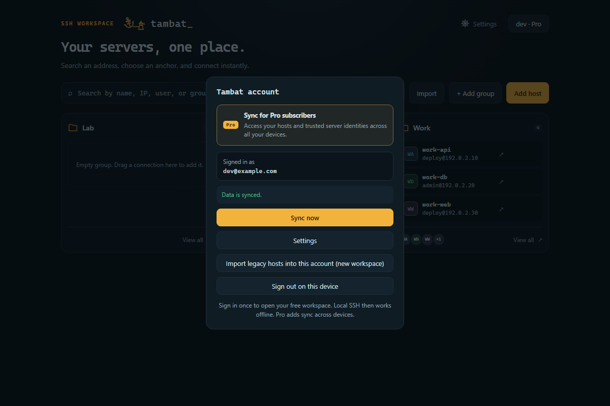
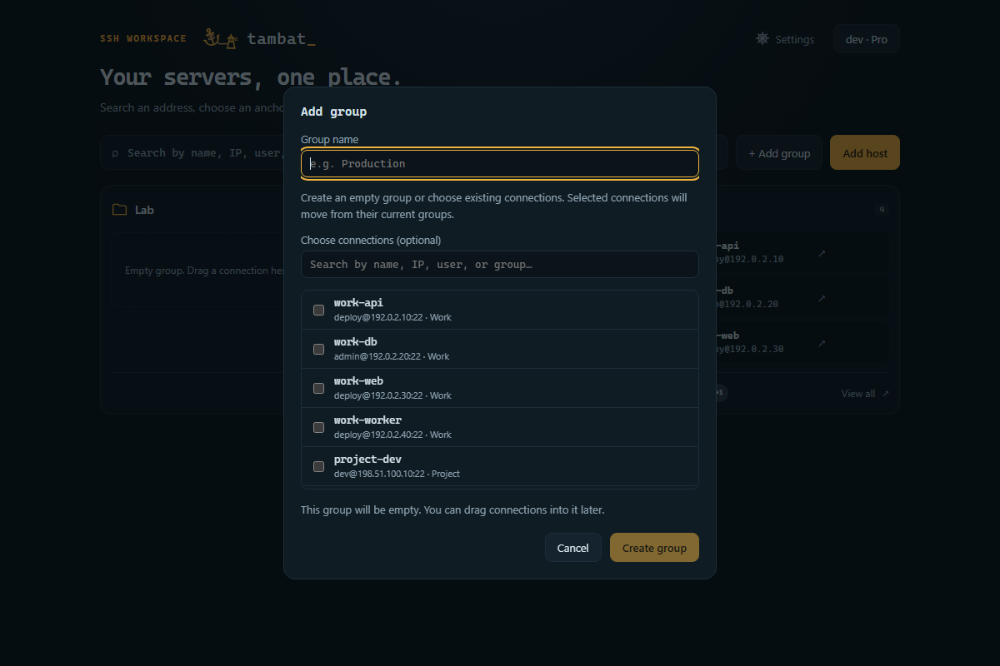
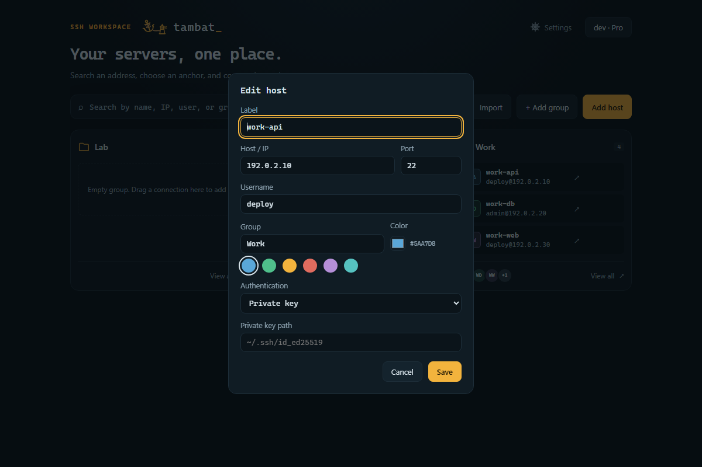
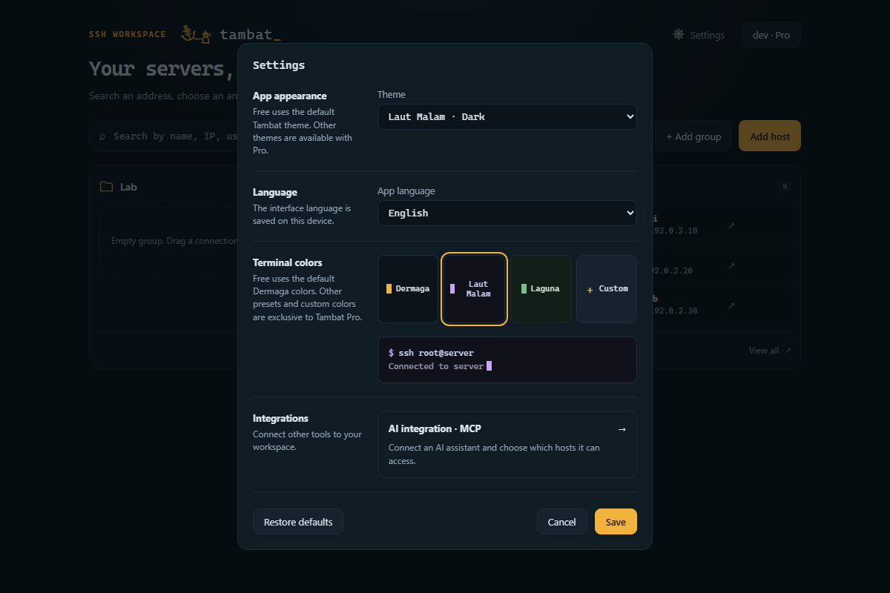

Grup server yang rapiSatu ruang kerjaSinkron antarperangkat · Pro
Sinkron antarperangkat · Pro
Beda perangkat. Workspace yang sama.
Masuk dengan akun Tambat Pro yang sama di laptop atau desktop lain. Daftar server dan grup Anda ikut tersinkron, tanpa menyusun semuanya dari awal.
Login dengan akun yang sama
Temukan server dan grup yang sudah Anda tata
Cek status sync langsung dari panel akun
Tersedia di Windows, macOS, dan Linux dengan Tambat Pro. Password dan private key tetap tersimpan di perangkat masing-masing.
Setelah login · Akun Pro

Satu ruang kerja
Server bertambah. Tetap tertata.
Mulai dari halaman utama yang rapi. Kelompokkan server sesuai proyek, temukan yang dibutuhkan, lalu langsung bekerja.
▦
Setiap proyek punya tempat
Kelompokkan server berdasarkan pekerjaan atau proyek langsung di halaman utama. Seret server ke grup lain, atau gunakan pencarian untuk menemukannya dengan cepat.
Work 2work-apiwork-db
Project 1project-dev
⇄
Pindah perangkat, tetap familiarPRO
Daftar server tersimpan dan grup Anda tersinkron antarperangkat. Masuk dengan akun yang sama tanpa menyusun ulang semuanya dari awal.
Sinkronisasi untuk daftar server dan grup. Password dan private key tetap di perangkat Anda.
>_
Pindah server, tetap fokus
Buka beberapa sesi sekaligus, temukan output yang dicari, dan lanjutkan pekerjaan tanpa menyambung ulang.
dev@project:~$ uptime
up 24 days, load average: 0.08
dev@project:~$
↕
File server di sisi terminal
Jelajah, unggah, unduh, pindah, dan ubah nama file melalui SFTP tanpa meninggalkan sesi.
⌁
Kondisi server sekilas
Pantau memori, disk, suhu, baterai, dan latensi langsung dari panel sesi aktif.
FREE & PRO
Mulai dari kebutuhan utama. Sesuaikan dengan Pro.
Tambat Free
Workspace SSH sehari-hari, di perangkat ini.
Terminal SSH, beberapa sesi, dan SFTP
Grup server, drag and drop, dan pencarian
Tema gelap default dan warna terminal Dermaga
Integrasi MCP lokal untuk metadata host yang diizinkan
Tambat Pro PRO
Semua fitur Free, ditambah sync dan personalisasi.
Sinkronkan host tersimpan dan pengelompokannya antarperangkat
Sinkronkan fingerprint server yang dipercaya
Tema gelap, terang, atau mengikuti sistem
Semua preset terminal serta warna latar, teks, dan kursor custom
Password dan private key tetap di perangkat Anda. Grup kosong tersimpan lokal. Tanpa akses Pro, Tambat memakai tema default.
Fokus sejak dibuka
Antarmuka yang tidak menghalangi pekerjaan.
Rapi sejak halaman utamaGrup server + pencarianLogin. Sinkron. Siap bekerja.Akun + sinkronisasi · ProTempat untuk setiap koneksiGrup kosong + koneksi yang sudah ada

Koneksi berikutnya, siapDetail server + grup

Sesuaikan dengan cara kerja AndaTema + warna terminal · Pro

Bekerja lebih tenang
Server Anda. Kendali Anda.
Kredensial terlindungi
Simpan kredensial dengan aman di perangkat Anda agar tidak perlu mengetik ulang setiap kali terhubung.
Kenali koneksi Anda
Dapatkan peringatan saat identitas server berubah, sehingga Anda bisa memeriksanya sebelum melanjutkan koneksi.
Siap untuk sesi berikutnya
Simpan dan kelompokkan server Anda. Temukan yang dibutuhkan dan hubungkan kembali tanpa mengisi detail dari awal.
Siap menambat?
Beri ruang untuk kerja yang lebih nyaman.
Jelajahi Tambat Community Edition, tersedia sebagai proyek terpisah di GitHub.